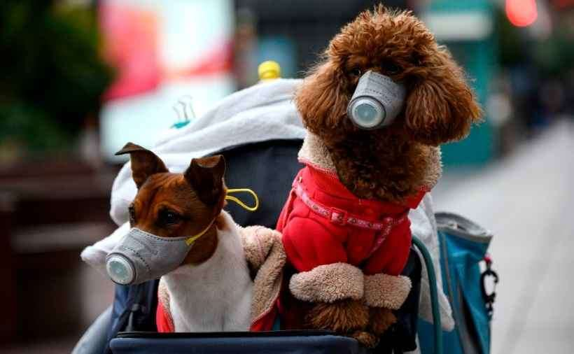

Veja dicas para a convivência com os pets durante a pandemia:
- Pessoas que já contraíram o coronavírus devem evitar o contato com os animais, já que não há dados precisos sobre a infecção em pets
- Quando o convívio é inevitável, uma boa ideia é usar luvas e máscara facial sempre que possível
- Evite passear com os animais em lugares de grande circulação de pessoas
- Lave bem as mãos antes e depois de brincar ou tocar nos bichos
- A higiene das mãos com água e sabão é recomendada depois de manusear os alimentos e limpar a urina e as fezes do pet. Antes de colocar água e comida para o animal, o tutor deve higienizar as mãos para não contaminar as tigelas
- Evite beijar, receber lambidas ou compartilhar comida com o animal
- Dentro ou fora da quarentena, os animais precisam receber cuidados especiais para que não transportem o vírus entre pessoas através do toque. É importante pontuar que transportar não é o mesmo que transmitir. Segundo especialistas, esse vírus não é contraído por cães ou gatos

Fonte: Jornal Estado de Minas